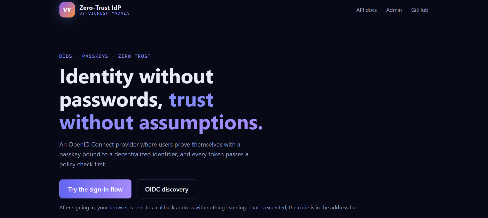
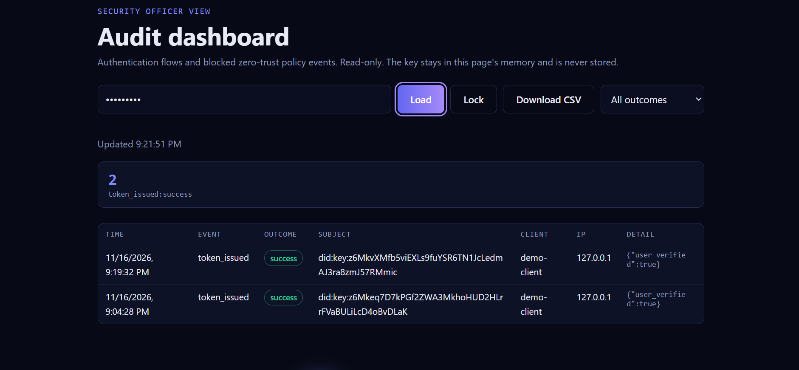
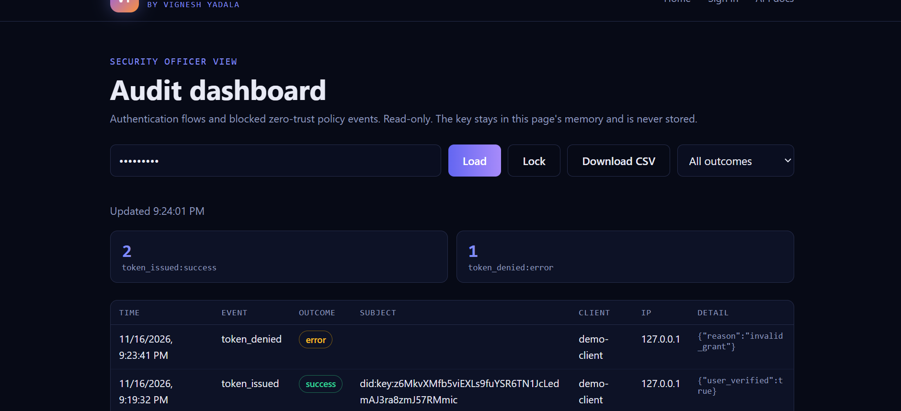

A decentralized identity provider with passkeys, DIDs and a zero-trust policy engine. This page replays the real sign-in flow, a refused replay attack and the 36 attack tests. Nothing here talks to a server.
Click a step or press play. Follows docs/how-it-works.md.
The exact commands from the README demo. Responses are shortened; secrets are never shown.
After the two commands above, the admin dashboard shows one success and one denial.
| Event | Result | Why |
|---|
Each square is a real test from docs/pentest-results.txt. Hover or tap one for its name.
Taken from the running service.


